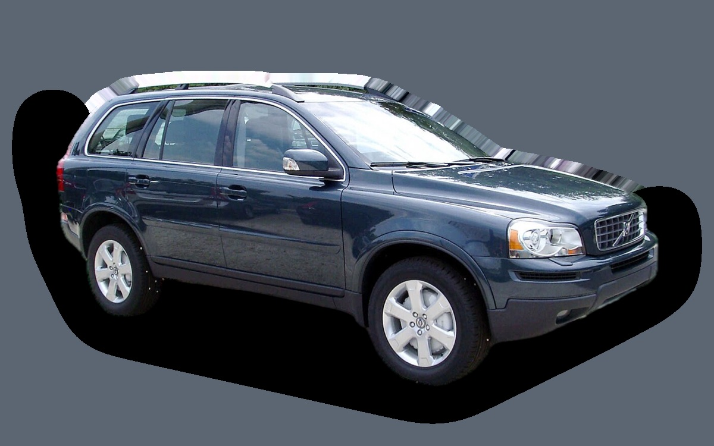
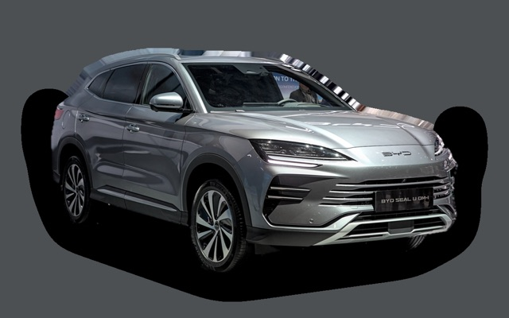
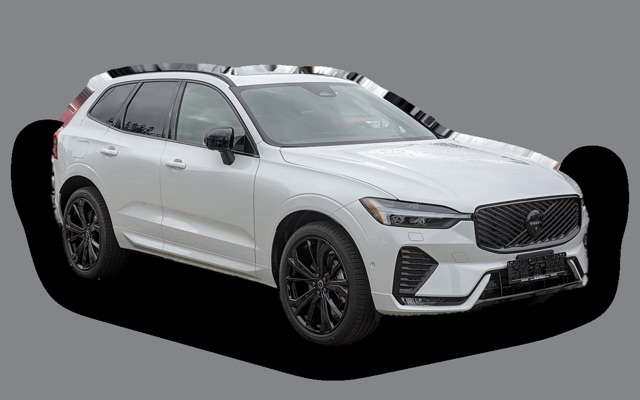
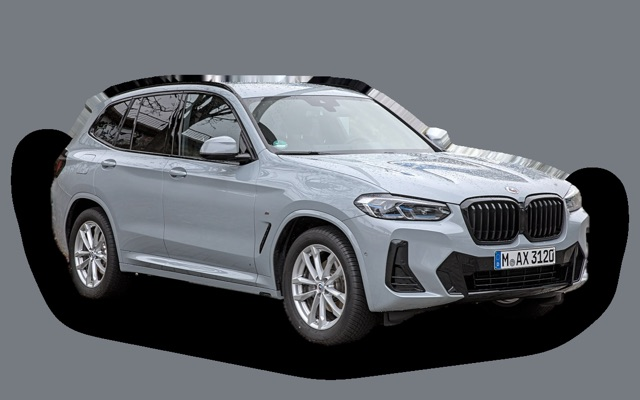

Vad kostar en Volvo XC90 I per månad?
En Volvo XC90 I från 2011 kostar cirka 5 410 kr i månaden, allt inräknat.
5 410 krper månad, årsmodell 2011
88 000 krpris, årsmodell 2011
399 900 krsenaste nypris
Eprisvärdhetsbetyg (2011)


Månadskostnad per årsmodell
| Årsmodell | Version i beräkningen | Pris | Per månad | Betyg |
|---|---|---|---|---|
| 2014 | D5 AWD 200, Kinetic | 122 000 kr | 5 730 kr | E |
| 2011 | D5 AWD 200, Kinetic | 88 000 kr | 5 410 kr | E |
| 2008 | D5 AWD 200, Kinetic | 64 000 kr | 5 142 kr | E |
Räknat på 5 års ägande och 1 250 mil per år, med bränslepriser från 2026-10-22. Månadskostnaden innehåller värdeminskning, drivmedel, service och reparationer, försäkring och fordonsskatt.
Så fördelas kostnaden för en 2011:a
- Värdeminskning: 612 kr/mån
- Drivmedel: 2 569 kr/mån
- Service och reparationer: 1 429 kr/mån
- Försäkring: 211 kr/mån
- Fordonsskatt: 588 kr/mån
Begagnatpriser i annonser
| Årsmodell | Medianpris | Annonser | Typiskt miltal |
|---|---|---|---|
| 2014 | 150 000 kr | 23 | 22 000 mil |
| 2013 | 142 400 kr | 10 | 23 400 mil |
| 2012 | 102 400 kr | 10 | 30 200 mil |
| 2011 | 99 400 kr | 14 | 28 400 mil |
| 2010 | 80 000 kr | 7 | 31 500 mil |
| 2009 | 68 800 kr | 6 | 36 800 mil |
| 2008 | 60 500 kr | 10 | 32 800 mil |
| 2007 | 67 400 kr | 12 | 28 300 mil |
| 2006 | 50 000 kr | 9 | 29 700 mil |
| 2005 | 65 000 kr | 6 | 25 600 mil |
Medianpriset i svenska annonser per årsmodell i oktober 2026 (källa: Blocket, AutoUncle, BilKoll). Annonspriser är utgångspriser, och slutpriset kan bli lägre.
Motorer och versioner
| Motor | Drivmedel | Effekt | 0–100 km/h | Förbrukning (WLTP) | Räckvidd | Årsmodeller | Pristillägg |
|---|---|---|---|---|---|---|---|
| D5 AWD 200 | Diesel | 200 hk | 10,3 s | 8,5 l/100 km | – | 2005–2014 | – |
| 3.2 AWD 243 | Bensin | 243 hk | 9 s | 11,6 l/100 km | – | 2005–2014 | +22 000 kr |
| V8 AWD 315 | Bensin | 315 hk | 7,3 s | 13,5 l/100 km | – | 2005–2014 | +120 000 kr |
- Utrustning: Kinetic, Summum (+30 000 kr)
Fakta
- Kaross
- SUV
- Årsmodeller
- 2005–2014
- Senaste nypris
- 399 900 kr
- Bagage
- 615 liter
- Euro NCAP
- inte testad
- Nybilsgaranti
- 3 år
- Driftsäkerhet
- 3 av 5
- Helförsäkring, uppskattning
- 6 600 kr/år
- Service, uppskattning
- 5 400 kr/år
Vanliga fel att ha koll på
- Vinkelväxel och Haldex-koppling, reparation cirka 15 000 kr
- Automatlådan (Aisin TF-80SC) går sönder, reparation cirka 55 000 kr
- Insprutare och virvelspjäll (femcylindrig diesel), reparation cirka 7 000 kr
- Vevhusventilation (PCV) sätts igen, reparation cirka 6 000 kr
- Partikelfilter och EGR (diesel), reparation cirka 9 000 kr
- Kamkedja (sexcylindrig), reparation cirka 23 000 kr
- ABS/DSTC-modul, reparation cirka 7 000 kr
- Rost i hjulhus och trösklar, reparation cirka 15 000 kr
- Länkarmsbussningar och kulleder fram, reparation cirka 6 000 kr
Felen gäller vissa motorer och årsmodeller. I kalkylatorn räknas risken för just den version du väljer.
Fördelar och nackdelar
Fördel
Stor och trygg sjusitsig SUV som är billig begagnad.
Nackdel
Hög förbrukning och dyrare reparationer med åldern.
Liknande bilar

BYD Seal U5 460 kr/mån som 2026:a Mercedes-Benz GLB5 238 kr/mån som 2023:a
Mercedes-Benz GLB5 238 kr/mån som 2023:a
Volvo XC605 182 kr/mån som 2023:a Kia Sorento5 083 kr/mån som 2023:a
Kia Sorento5 083 kr/mån som 2023:a
BMW X35 754 kr/mån som 2023:a Mazda CX-605 031 kr/mån som 2023:a
Mazda CX-605 031 kr/mån som 2023:a
Uppdaterad 2026-10-26 · annonsdata okt 2026